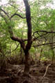
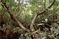
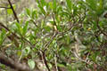
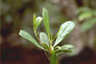
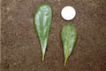
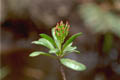
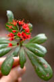
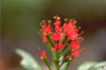
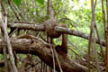
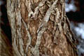

Diagnostic characters
Botany & morphology
Regeneration
Reproductive biology
Ecology
Distribution
Uses
Status
Trees, 8 – 15m tall with knee-bent aerial roots. Leaves spirally arranged. Flowers red, in short terminal spikes; fruit 1-seeded pseudocarp.
Leaves simple, alternate, ovate or ovate-elliptic, apex emarginate, base cuneate, 1.5 - 4.5 x .8 - 1.5 cm, coriaceous.
Inflorescences terminal spikes.
Flowers small, red, shortly pedicellate, zygomorphic, 16 – 18 mm long; stamens twice as long as petals; ovary 4 – 5, style subulate, stigma simple.
Fruits 9 – 12 mm long, ellipsoid-oblong, longitudinally ribbed.
Bark dark brown, fissured.
Tree architecture shows with Scarrone’s model.
Pneumatophores with looped laterals that protrude up to 10 cm above the substrate; knee-bent aerial roots from stem base.
Hypogeal germination.
Pollination by birds, sunbirds and honeyeaters; bees and wasps are additional flower visitors.
Back mangrove species, rather uncommon and is mostly restricted to elevated interior area of mangrove forests.
Burma, Malaysia, North Australia and Polynesian mangroves. In India Andaman & Nicobar Islands and in Sri Lanka only a few trees in one or two localities (Balapitiya Lagoon).
Used as firewood, timber for building bridges, wharves, and flooring. Potentially ornamental due to its red flowers.
Rare in Sri Lanka.
Top of the page